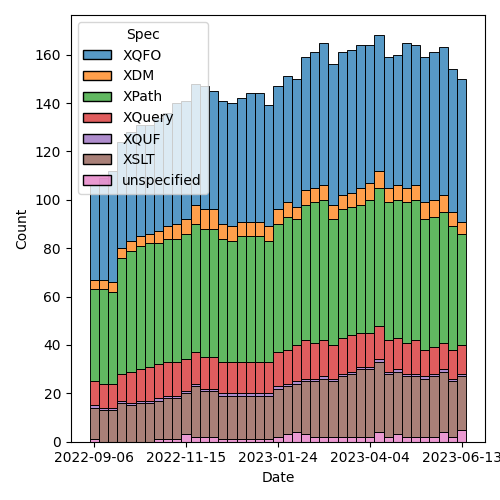
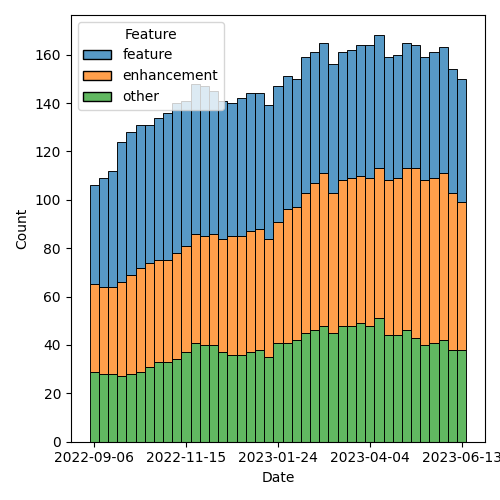

QT4 CG Meeting 039 Minutes 2023-06-20
Table of Contents
Agenda index / QT4CG.org / Dashboard / GH Issues / GH Pull Requests
Draft Minutes
Summary of new and continuing actions [0/5]
[ ]QT4CG-002-10: BTW to coordinate some ideas about improving diversity in the group[ ]QT4CG-016-08: RD to clarify how namespace comparisons are performed.[ ]QT4CG-026-01: MK to write a summary paper that outlines the decisions we need to make on “value sequences”- This is related to PR #368: Issue 129 - Context item generalized to context value and subsequent discussion.
[ ]QT4CG-029-01: RD+DN to draft spec prose for the “divide and conquer” approach outlined in issue #399[ ]QT4CG-029-07: NW to open the next discussion of #397 with a demo from DN See PR #449
1. Administrivia
1.1. Roll call [10/11]
Regrets DN.
[X]Reece Dunn (RD)[X]Sasha Firsov (SF)[X]Christian Grün (CG)[X]Joel Kalvesmaki (JK) [0:10-][X]Michael Kay (MK)[X]John Lumley (JL)[ ]Dimitre Novatchev (DN)[X]Matt Patterson (MP)[X]Ed Porter (EP)[X]C. M. Sperberg-McQueen (MSM)[X]Norm Tovey-Walsh (NW). Scribe. Chair.
1.2. Accept the agenda
Proposal: Accept the agenda.
Accepted.
1.2.1. Status so far…
Figure 1: “Burn down” chart on open issues

Figure 2: Open issues by specification

Figure 3: Open issues by type
1.3. Approve minutes of the previous meeting
Proposal: Accept the minutes of the previous meeting.
Accepted.
1.4. Next meeting
The next meeting is scheduled for Tuesday, 27 June 2023.
No regrets heard.
Accepted.
Reminder: the CG will take a vacation for four weeks in August. We will not meet on 1, 8, 15, or 22 August.
1.5. Review of open action items [3/8]
[ ]QT4CG-002-10: BTW to coordinate some ideas about improving diversity in the group[ ]QT4CG-016-08: RD to clarify how namespace comparisons are performed.[ ]QT4CG-026-01: MK to write a summary paper that outlines the decisions we need to make on “value sequences”- This is related to PR #368: Issue 129 - Context item generalized to context value and subsequent discussion.
[ ]QT4CG-029-01: RD+DN to draft spec prose for the “divide and conquer” approach outlined in issue #399[ ]QT4CG-029-07: NW to open the next discussion of #397 with a demo from DN See PR #449[X]QT4CG-035-01: CG to make a few more (slightly more complex)map:keysexamples.[X]QT4CG-035-02: CG to fix the type signature and examples inmap:filter.[X]QT4CG-038-01: NW to attempt to craft some sort of proposal for dealing with stale issues.
1.6. Review of open pull requests and issues
The following editorial or otherwise minor PRs were open when this agenda was prepared. The chair proposes that these can be merged without discussion.
- PR #549: 526 load xquery module
- PR #552: Editorial: Updates to back matter and status section of F+O spec
- PR #551: Drop the fn:differences function
- PR #550: 548: require parens around lambda arguments
- PR #558 Added fn:items-X cross-references
- PR #559 Minor editorial edits
Proposal: Accept these PRs.
Accepted.
It has been proposed that the following issues be closed without action.
- Iss #425: Structural proposal (ThinLayer™️) : Add a layer of thin spec between XPath and the XPath Derived Language
- Iss #399: fn:deep-equal: Using Multilevel Hierarchy and Abstraction when designing and specifying complex functions
- Iss #376: add documentation prefix attribute to xsl:stylesheet
- Iss #331: Extend fn:path to support arrays and maps.
- Iss #112: Abbreviate map:function($someMap) to $someMap?function()
- Iss #82: Should the mode attribute for apply-templates in templates of enclosed modes default to #current?
An issue that is closed can always be reopened if someone, on further consideration, decides it shouldn’t have been closed.
- RD: I’d like to discuss issue 52.
- NW: Ok, next week. (Removed from list.)
Proposal: Close these issues.
Accepted.
2. Technical Agenda
This week’s focus is on two large PRs related to CSV and JSON. We expect Matt Patterson to join us for the CSV discussions.
2.1. PR #533: 413: Spec for CSV parsing with fn:parse-csv()
See PR #533
- MP: introduces the topic.
- The format does not cleanly to our base XDM constructs; it’s weird and poorly specified.
- There’s an RFC which is really about any consistently delimited,
line-oriented text files.
- The RFC is an attempt to catalog existing practice. It was rather Anglo-centric.
- Also it failed to noticed that Microsoft Excel on the Mac doesn’t produce valid CSVs.
- It’s been almost 20 years since it was published, work is underway to revise it.
- The basic thing is that you need to be fairly liberal in your parsing.
- Using the RFC as it exists as a basis for generation makes a lot more sense than using it for parsing.
- I looked at bunch of parsers/generators in a bunch of languages
- I’ve spent years working with Ruby’s version
- Also looked at several Java parsers and the Python one
- The simpler it can be, the better. A lot of time in other language implementations is taken up with data transformations and mappings from pure strings into native formats. I think as a function provided by the language itself, we should stay away from that.
- We just provide a collection of strings.
- The convention that the first row is a set of column names is pretty universally supported.
- In most language implementations, what gets returned is an object that behaves a bit like an object and a bit like an array; which is something we don’t have.
- We have to take a slightly more lispy approach and separate them
- I propose a function that takes a string and
- Return a record that identifies the parts. If you ask the function to treat the first row as column headers, you can use those names to lookup fields.
- We can abstract away some of that machinery by returning a function that takes a name or column number.
- There are questions about how to deal with duplicate names.
- As far as I can see, the consensus in other languages is that you take the first occurence of the name and discard the rest.
- The other thing you need to provide is a complete record of that first row so that you can construct the whole CSV if you need to.
- What we have at the moment is an array of sequences that gives you access to the actual data itself.
Some discussion of the status of the current draft. Resolved as a caching issue.
- MP continues
- The number of columns in a row can vary.
- If you access a position that doesn’t exist in an array, you get an error. If you access it in a sequence, you get the empty sequence. That’s why the proposal is for an array of sequences.
- For some implementations, a sequence of arrays might be easier.
- But I think arrays of sequences works best at the moment.
JL clarifies that the return is an array of sequences, one array entry for each row; a sequence of columns.
- MP continues
- There are defaults for line and column separators.
- Some languages make it harder to set the separators, but they allow you to if you really need to.
- Quoting in CSV is weird, it doesn’t use backslash escapes. To escape the quote character you just double it.
- Whitespace is supposed to be preserved by default, but there are
cases where you get a bunch of extra whitespace (padding or whatever).
- There’s an option to trim leading and trailing spaces (but not touching embedded whitespace)
- The default for whether or not to treat the first row as a header should probably be false.
- In the data structure that’s returned, there’s a function called
fieldsthat basically wraps up accessing the fields. - Attempted to provide examples, but more are expected.
- There are some issues with the names of things; the RFC uses records and fields. I’ve always thought of them as rows and columns. So now we have CSV records that are different from our records.
- NW: Don’t do that. Call them rows and columns.
- RD: You could also add a couple of notes to make it clear that we know we’re mapping from the RFC terms.
- MP: I don’t have a strong opinion about the names.
- MP: The spec is currently incomplete because I’m not sure best how to document a function returned in a map from a function.
- MK: Producing testable examples here is going ot be tricky because of the problem of function identity.
Some discussion of providing a separate function for generating the
header map and for processing individual lines. You could then build
the same machinery. This might allow you to work around the problem of
different line endings from what, for example, unparsed-text()
produces
- MP: Having separate functions would make them easier to document in some sense. The function that’s returned could be a partial application of a more general function applied to the header map.
- RD: I have two questions:
- 1. What about parsing CoNLL-U format, a tab separated format. They have fixed headers that are not provided in the file, but they’re part of the format.
- MP: When this was original conceived, the field lookup function wasn’t part of the returned data structure. The suggestion was that you extract the map to do the lookup. If you’re using a variable to define the map, you can use that variable. If we’re giving you a function, we should provide a way for you to pass in your own map. As soon as you start providing conveniences for field lookup, then it makes sense to enable someone to pass in a map. That also applies to generating CSVs.
- RD:
- 2. The CoNLL-U format also allows comment lines. Can those be supported?
- MP: That’s mentioned in more recent drafts of the RFC. It should be possible to include; it complicates things a little bit but it’s probably common enough.
- RD: Comments are single lines, not ends-of-lines etc.
- MP: Do you want the comments back?
- RD: Yes
- MP: That complicates things. This proposal doesn’t require a
fixed number of fields on each row, so it could get weird.
- It seems like this is something we probably need because they’re likely to generate errors if we don’t support them.
- MSM: I think I have two questions.
- 1. You’ve been mostly talking about
parse-csv, I see there’s also acsv-to-xmlfunction and I wonder, when I have CSV to parse, I use the BaseXparse-csvfunction and that’s always worked for me. How doescsv-to-xmlcompare to theparse-csvfunction BaseX?
- 1. You’ve been mostly talking about
- MP: It’s terribly named. It doesn’t have a schema for what a CSV
should look like. It’s meant to be there so that if you’re turning a
50 column weird financial CSV int XML, it’s easier to get to the
things you need. It’s an iterator across a data in the parsed CSV
record. it goes through and gives you all the columns, you can say
you only want columns 1, 5, and 7 or only “date” and “description”.
- It also allows you to hide away the fact that simple iteration with ?* doesn’t work over sequences.
- MSM:
- 2. I didn’t understand most of the explanation; I think that
illustrates my primary reaction which is that this seems like an
awful lot of machinery. I’d like simple case to be simpler. In
connection with that, I can relate to some people wanting to get
one kind of thing back and others a different kind of thing. There
are lots of different things that users might want to get
(elements, attribute, maps, arrays, records)
- Why not return an array of maps or a map of maps or…
- If I’ve got headers, what I generally want is an element because I find XML a useful way to structure information.
- 2. I didn’t understand most of the explanation; I think that
illustrates my primary reaction which is that this seems like an
awful lot of machinery. I’d like simple case to be simpler. In
connection with that, I can relate to some people wanting to get
one kind of thing back and others a different kind of thing. There
are lots of different things that users might want to get
(elements, attribute, maps, arrays, records)
- MP: Maps would be feasible, but there would be a lot of redundancy there. You’d effectively be repeating the header data for every row. And the other problem is that a lot CSVs have duplicate headers. Or columns that don’t have a header.
- MSM: In those cases, I expect some munging to occur. A suffix number, for example: “num” and “num_2”. Or “field_37” if there’s no header. If you’d like a map, a map with a munged name is likely to be better.
- MP: I think the biggest problem with maps in this case is the lack of a defined order.
- MSM: If I have distinct names and a way to determine which columns got those names, I can solve that problem.
- RD: You could also use sequences indexes.
- MP: That all sounds more heavyweight which I’d like to avoid. A separate issue here is that it would be nice if this actually spat out actual elements or a more common thing like a map or a sequence.
- MK: It would be nice if you could get the natural way you’d express the same data in XML or JSON very simply.
- MP: In JSON?
- MK: As an array of maps.
- CG: In BaseX, one of the things that’s important is that the formats
can be reversed. We didn’t use maps because we can’t get back the
original order. The main problem with the XML representation was the
memory consumption for millions of records. That’s also why we
didn’t duplicate any data. A minimal representation is a sequence of
arrays. This allows us to recreate the original structure.
- Do we want a unidirectional conversion, or do you need to be able to back?
- MP: With the exception of whitespace trimming, there’s nothing in
the return format that would prevent you from constructing a
functionally equivalent CSV.
- Perhaps the delimiters used shold be part of the returned record.
- You don’t know necessarily whether fields were quoted.
- To go all the way down to the byte level, you couldn’t use
unparsed-textbecause we wouldn’t have, for example, the encoding.
- JL: If you provide a CSV string that only contains the header row, you’ll get back an entry with map that identifies the columns.
- MP: And an empty map.
- JL: Can I reuse that header with another parse which doesn’t have the header.
- MP: That’s not in the draft as it stands. But it seems like something we should add.
- SF: We have usability, scalability, and performance problems here.
To be able to work efficiently usually XSLT and XML take the
streaming approach. Process the data while it’s still being
received. If we won’t treate CSV as a data source, then we will have
scalability issue problems. If you have issues with the interface,
that’s a usability problem. Whether you want to expose the data as
arrays or sequences, that’s a an API issue. In Java, you can have an
accessor for basically an Collection from any other collection. If
you don’t do that, then we will face those issues with different
format access, with performance, and treating as a single blob a
stream, it will be processed multiple times as a very chunk of
memory.
- We should separate the problem of data source and an interface for any kind of data source.
- MP: I think there are a lot of use cases where you want to parse a fairly small string. The ins-and-outs of a streaming approach would need more consideration.
- MK: On the input side, one possibility would be to accept a sequence of strings.
- MP: I did think about that.
What to do before next week? Please try to engage in email and in issues and comments.
Some discussion of how to make the presentation easier. MK proposes displaying the text.
- CG: I would be happy if there was more discussion on the pull request.
3. Any other business?
None heard.